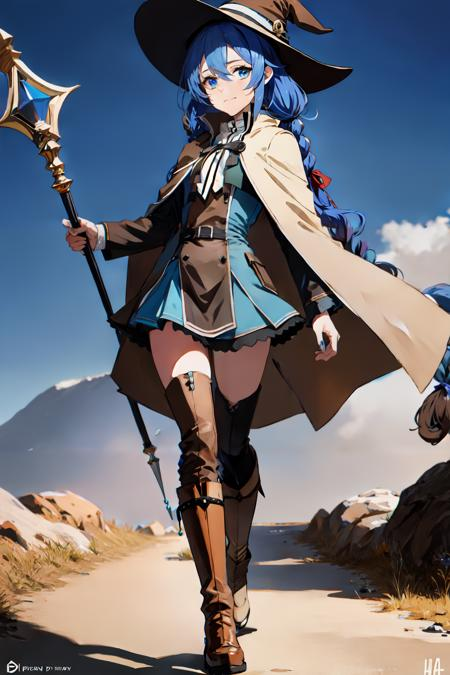

| 角色名稱 | 照片 | 介紹 |
|---|---|---|
| 魯迪烏斯·格雷拉特 | 轉世前，他是一個肥胖的的34歲日本尼特族，在高中迫害後成為隱士。在劍與魔法的世界重生後，他拋棄了過去的身份，努力把魯迪烏斯·格雷拉特這一新身份的新生活變得有意義。因此，他採取了紳士的角色，儘管他前世殘留下來的變態屬性有時會出現並嚇到周圍的人。 由於保留了他的智力，魯迪烏斯能夠在三歲時開始魔法訓練，並且能夠使用無詠唱魔法。由於這次修行，他擁有異常龐大的法力容量。因為洛琪希·米格路迪亞幫助他克服了對外界的恐懼，魯迪烏斯把她當作自己的神，並將自己的成就與她聯繫在一起。在無聊的時候，魯迪烏斯製作人物的小雕像以增強他的土系魔法，這已成為他的主要攻擊魔法。魯迪烏斯被收進格雷拉特家族的伯雷亞斯分支，成為堂姐艾莉絲·伯雷亞斯·格雷拉特的魔法導師。 多年來，魯迪烏斯與伯雷亞斯家族建立了聯繫，並自學了更多關於世界的知識，同時學習了幾種不同的語言。在他十歲生日的時候，艾莉絲和伯雷亞斯一家送給魯迪烏斯一根魔法杖。不久之後，一道魔法光束襲擊了這個國家，將人們運送到了世界各地，魯迪烏斯以及他的家人與朋友們都不例外。 | |
| 洛琪希·米格路迪亞 |  | 魔族「米格路德族」出身，水王級魔術師。A級冒險者。 受種族影響成年後就一直保持嬌小蘿莉身材，綁有雙馬尾三頭麻花辮，看起來睡眼惺忪的美少女。 禮貌且勤奮的努力家。外表14歲，初次相遇時與男主實際年齡相同，初登場時已37歲（即為34+3歲）。 擅長水系統的魔術以及短詠唱的運用，有豐富的作為魔術師進行近距離戰鬥的經驗，不論對人還是對魔物的戰鬥都很擅長。 自幼缺失本族人獨有的溝通能力「念話」，因而除了族長和努力學習了魔神語的父母能與她溝通之外無人能和洛琪希溝通，感覺自己在村裡被孤立了感到孤獨，在見識到了魔術的魅力後毅然離家踏上旅程。後就讀於拉諾亞魔法大學並師從吉納斯。 後成為魯迪烏斯·格雷拉特童年時的家庭魔術教師，給予魯迪一生深刻的影響，並受到了魯迪的尊重。 雖然作為教師有著睿智的一面，但平時很冒失。 |
| 希露菲葉特 | 居住在布耶納村的一位擁有1/4長耳族血統的少女，高興、害羞時會撲騰的又長又尖的雙耳是她的個人標誌。 為長耳族和獸族以及人族混血。（人族血統1/2、獸族1/4、長耳族1/4）。 由於血統的關係，生下來就擁有同人們所忌諱的「斯佩路德族」一樣的綠髮[1]，因此被人欺負。 小時候曾因不懂伸手進火爐里被燙傷，右手掌留下了燒傷痕跡，因此希露菲也完全不擅長火系魔術。 被魯迪所救後成為朋友，並在魯迪的教導下學習魔術。 把魯迪烏斯視為自己除父母外最重要的人。 | |
| 艾莉絲·伯雷亞斯·格雷拉特 | 阿斯拉王國上級貴族伯雷亞斯·格雷拉特家的大小姐，菲托亞領地領主的孫女、首府羅亞市長的女兒，家族關係上是男主角魯迪的遠房堂姐，比魯迪大兩歲。 有一頭標誌性的深紅色波浪狀長髮。 性格比較男孩子氣、狂野豪放，不像一般的大小姐那樣柔弱，卻又不乏大小姐的傲嬌、蠻橫個性，智商不足，是個頭腦簡單四肢發達的怪力女，生性非常好鬥，綽號「狂犬艾莉絲」。 有拔群的劍術才能，相反的魔法才能和學習能力很低下。 |